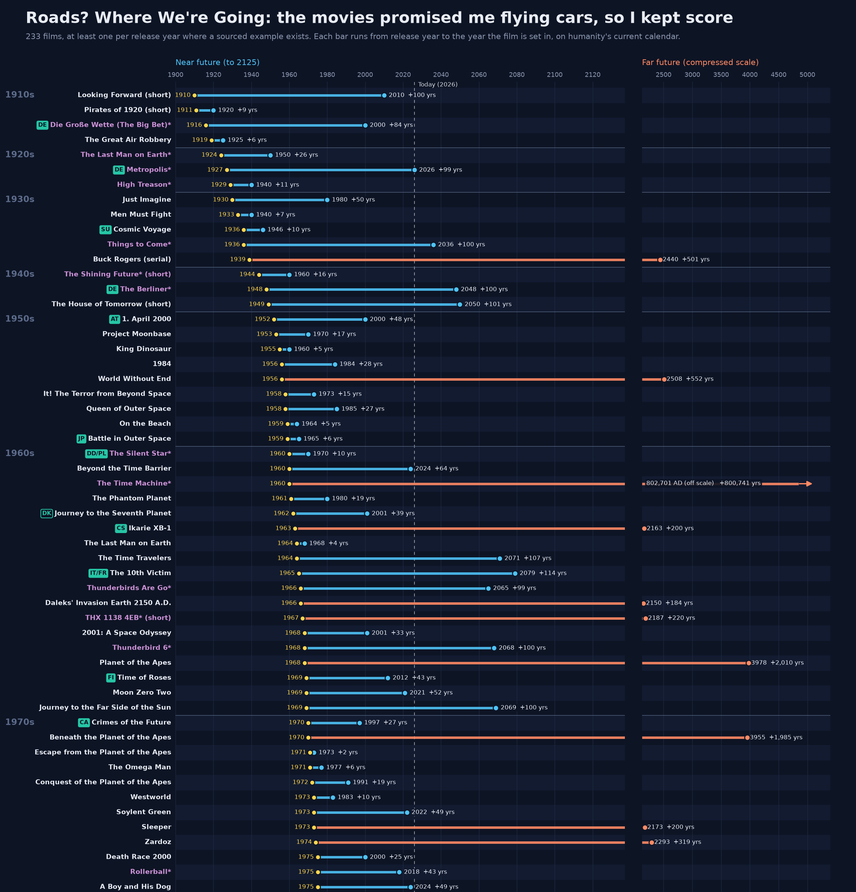
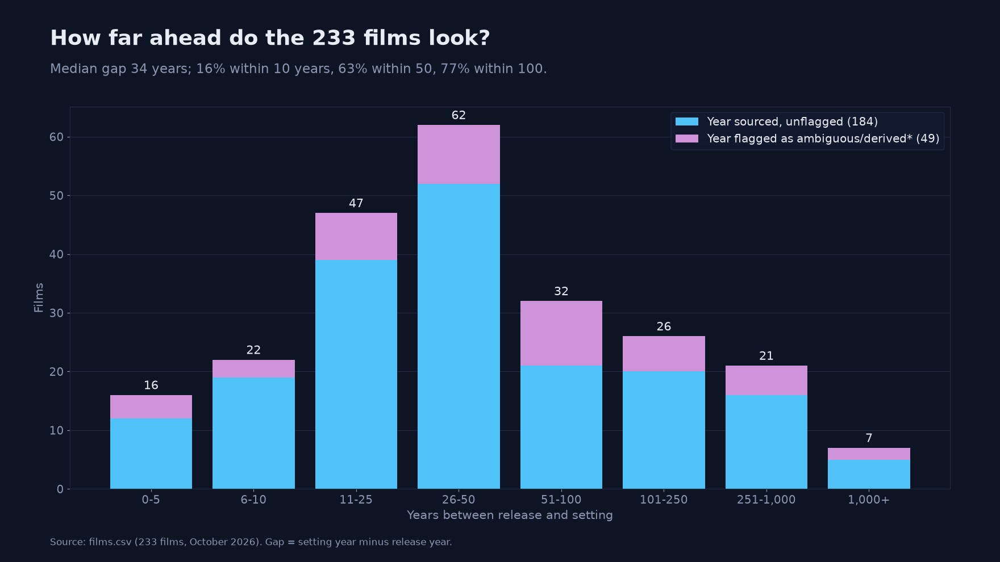
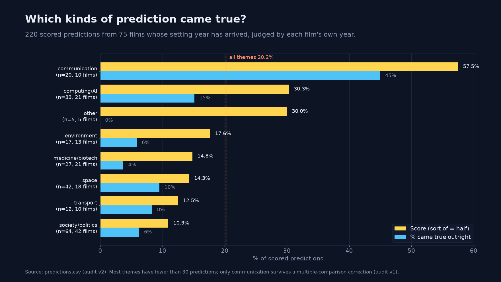
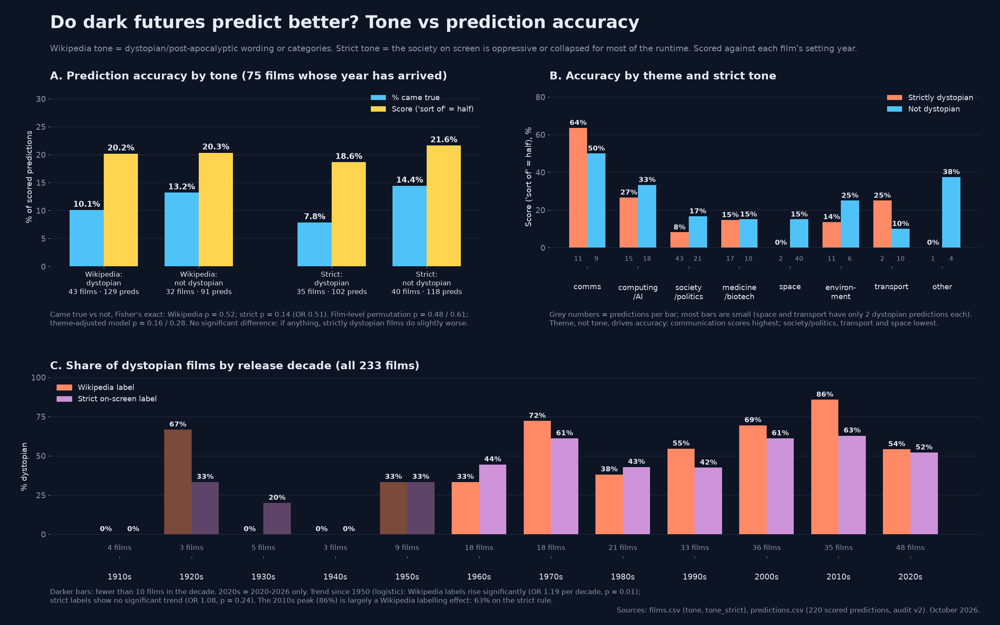
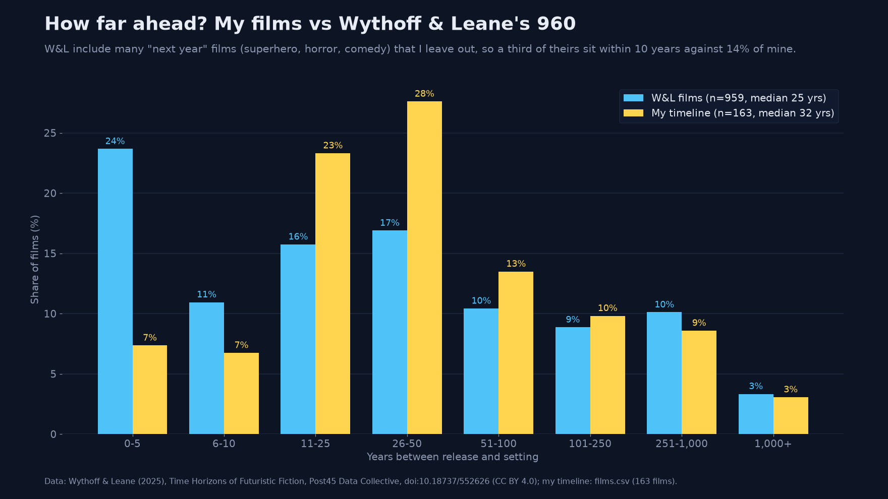
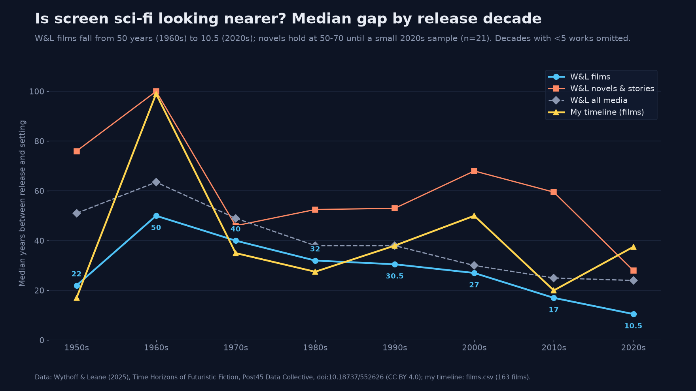
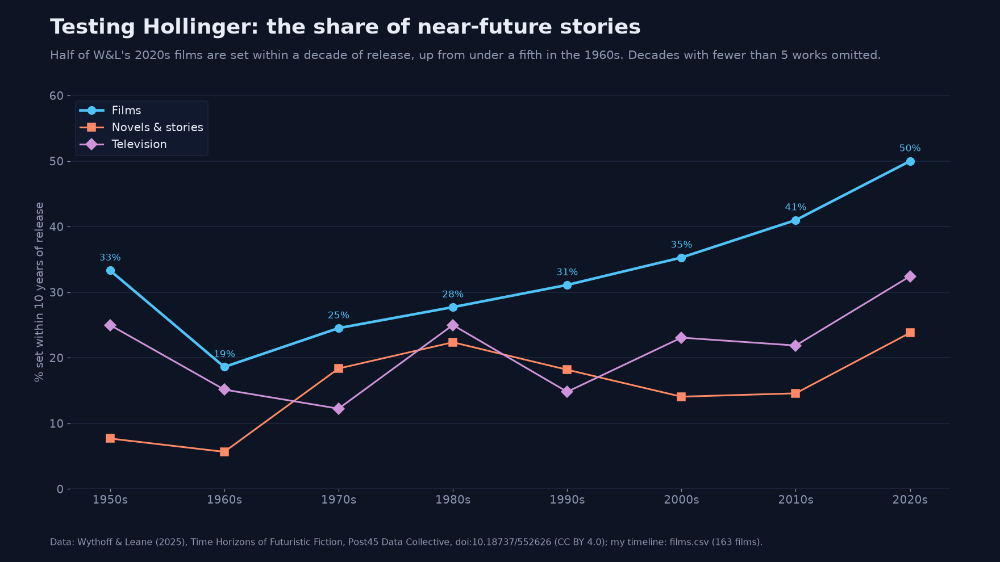

PDFWord (.docx)Markdown source
Roads? Where We're Going: the movies promised me flying cars, so I kept score
Andi Sharkey, October 2026.
On this site, the data files are on the Downloads page.
Abstract
Science fiction films often put a date on the future: 2001, 2015, 2019, 2122. I built a dataset by hand of 233 released films, from 1910 to 2026, that set their action in a named future year on humanity's current calendar. Then I used it to ask two simple questions. How far ahead do films look? And when the future they named arrives, how much of what they showed has actually happened? The median film is set 34 years after its release. Eighty-one of the 233 films (35%) are set in a year that has now arrived. From those films I scored 220 on-screen predictions against each film's own setting year. Only 11.4% came true outright, roughly 1 in 9. Counting near-misses as half, the score is 20.2%, roughly 1 in 5. It stays close to that however I slice it: 21.8% without the films whose evidence is thin, and 16.9% when every film counts equally. Communication technology does far better than any other theme (57.5%). Gadget forecasts as a whole score 40.6%, but only 2 of 42 forecasts of plague, war, collapse or police states came true. I find no significant link between a film's tone and its accuracy. The apparent rise of dystopian films is significant only under Wikipedia's labels, not under a stricter on-screen rule. A comparison with Wythoff and Leane's (2025) dataset of futuristic fiction shows that the two projects date shared films almost identically. They differ mainly in which films they select. All my data, notes and charts are in the repo.
1. Introduction
When Back to the Future Part II came out in 1989, it sent Marty McFly to October 2015. That date has passed. So have the 2019 of Blade Runner and Akira, the 2001 of Kubrick's space odyssey, and the 2017 of The Running Man. Each of these films made a dated promise, and the dates have now caught up with them. That gives me an unusual chance to check a work of fiction against the world it imagined.
Two separate questions are tangled together here. The first is about look-ahead: when film-makers imagine the future, how far ahead do they put it, and has that distance changed? The second is about accuracy: once the stated year arrives, how much of the imagined world turned out to be real? The first question needs only a release year and a setting year. The second needs a judgement about each thing a film shows. Was a video call, a flying car or a world government really part of life in the year the film named?
Here's the dataset I built to answer both questions, the rules I used, how I scored the predictions, and what I found. The project began as an infographic, a timeline running from each film's release to its setting year (Figure 1). It grew through three rounds of expansion, and I checked my own work twice along the way. It's a spare-time project, not a forecasting study: I wanted to see what a carefully sourced list of dated film futures looks like, and how much weight its numbers can bear.
Three caveats shape everything that follows. The films are well-known titles that name a year, not a random sample, so nothing here means "science fiction gets X% right". I scored every prediction myself and then checked it; nobody scored it twice blind. And deciding which on-screen details count as predictions matters at least as much as the verdicts (Section 5).

timeline.png). Each bar runs from release year (yellow) to setting year. Near futures (up to 2125) are blue on a linear scale and far futures are orange on a compressed scale. Titles in lilac and marked with an asterisk have an ambiguous, derived or off-screen setting year. Badges give the country for films made outside the UK and US. The full chart covers all 233 films.2. Related work
The closest thing I found is Wythoff and Leane's Time Horizons of Futuristic Fiction (2025), published by the Post45 Data Collective. It is a hand-verified dataset of 2,552 English-language works set in the future: 960 films, 377 television series or episodes, and novels, games, comics and other media. The works are drawn from Wikipedia and Wikidata, and each has a release year, a setting year and the distance between them. Its main criterion is the same as the one used here: a work set at least one year after its release. Its rule for works that span several years (a main year where the plot makes one obvious, otherwise the median of the years shown) is close to mine. Wythoff and Leane do not score accuracy or tone. They do copy Wikipedia's "future now past" notes into an unscored predictions column. Section 7 compares the two datasets directly.
On accuracy, the nearest academic study is Xu et al. (2021). Three raters scored 3,095 speculative technologies from the Technovelgy database, which is mostly written fiction, against a rubric. They report that 45% were judged "realised" by at least one rater (Fleiss' κ = 0.57), with an average of about 45 years to realisation. Their measure is "ever realised", whereas the measure here is "true by the stated year", and their unit is the technology, not the film. Even so, their use of several raters is the obvious model for improving the reliability of the present study. Arb Research's scoring of the non-fiction forecasts of Asimov, Heinlein and Clarke uses a correct/partial/wrong scheme much like mine. On strict technology accuracy it reports 57%, 48% and 36% respectively. Larson (2008) is closer in medium but much smaller. It is a content analysis of computer technology in ten popular science fiction films, including 2001 and Blade Runner, and it found that on-screen computers mostly reflect the technology of the year the film was made.
On tone, The Pudding's "Who killed the world?" (Chang, 2024) analysed the top 200 IMDb science fiction films and television shows of each decade from the 1950s. It found that recent science fiction is far more often set in dystopian or post-apocalyptic worlds. Its coding was done with a large language model and spot-checked by hand, and its sample includes works not set in the future. Artut (2017) reached a similar "dystopias dominate" conclusion with crowd-sourced labels. Bina et al. (2017) treat utopian and dystopian film and fiction as a lens on Europe's "Grand Societal Challenges". Theirs is a qualitative study, but it asks a question related to mine: what do imagined futures say about where we're all headed?
Two further strands supply hypotheses and caveats. Hollinger (2006) argued that science fiction has moved towards near-future or "present-tense" settings as accelerating change makes far futures harder to imagine. Wythoff and Leane flag this as an open question, and it can be tested with gap-by-decade data (Section 7). Kirby (2010) showed that film-makers and scientific consultants sometimes place "diegetic prototypes" in films deliberately, to build demand for technologies under development. So some "correct predictions" may be partly self-fulfilling, a point the interface-design literature also makes (Shedroff and Noessel, 2012; Jordan et al., 2018; Russell and Yarosh, 2018).
Informal versions include io9's 2012 chart of near, middle and far futures by decade, Patrick Coston's web table, and infographics by Dan Meth and Glow New Media. Wikipedia's lists of films set in the future and of stories set in a future now past are the main raw source for this project and for Wythoff and Leane's. As far as the literature search for this project could establish, no published work combines all three elements studied here: the release-to-setting gap, systematic scoring of on-screen predictions against the stated year, and a test of whether tone relates to accuracy.
3. Data and inclusion rules
3.1 Scope
The unit of the dataset is a released film set in a named year on humanity's current calendar. The current version (films.csv) holds 233 films, released between 1910 and 2026. Of these, 226 are features, six are shorts and one is a serial. By release route, 217 were theatrical, 15 went to streaming first or only, and one was non-theatrical. 124 are US-only productions, 39 involve the UK and 53 involve neither the US nor the UK. Release decades are uneven: three to five films a decade before 1950, rising to 48 in 2020–26.
3.2 Inclusion and exclusion rules
I fixed the rules early and applied them to every addition:
- Earth's timeline, humanity's current calendar. The film must be set in a future year on humanity's current calendar. Galaxy-far-away settings such as Star Wars are out. Invented or in-universe calendars are excluded unless an official source converts them. Star Trek is included as a judgement call, as Earth's future on humanity's current calendar; so are off-world films dated on humanity's current calendar, such as Planet of the Apes (2001, set in 5021).
- Released films only. Unreleased titles (Avengers: Doomsday, due December 2026) and festival-only screenings are excluded.
- Streaming counts. Films released first or only on streaming services are included and flagged (15 films, e.g. Archive, The Midnight Sky, Crater and Jackpot!).
- Shorts only to fill gaps. Shorts and serials are included only where they fill a release year that would otherwise be empty. The six shorts date from 1910, 1911, 1944, 1949, 1967 and 1978, and the serial (Buck Rogers) from 1939; Voices of a Distant Star (2002), a 25-minute short, was rejected.
- No alternate history. Films whose world breaks away from real history before release break the "real timeline" rule. Alternate-history settings did turn up in the search. They were excluded from the 233 and are parked in
alt_history_candidates.csvfor later; 2009: Lost Memories, set in a Korea still under Japanese rule, is the example moved out after the first audit. - Films, not television. Television series were set aside too. A separate chart of 94 series exists in
series/(series_timeline.png), and the series could be scored the same way later. - A sourced year, not a decade. Decades ("2040s"), centuries, and years found only in a Wikipedia category are grounds for rejection.
data/rejected_candidates.csv records 25 candidates rejected under these rules. Forbidden Planet (1956) is the best-known. Its opening narration gives only "by 2200" as backstory. The often-quoted 2257 comes from an old copy of the Wikipedia plot, with no official source, and Wikipedia now says "23rd century". The film is therefore excluded rather than assigned a year.
3.3 Sourcing the setting year
Setting years follow a rough hierarchy of evidence. Highest is a date shown or spoken on screen, or stated directly in a well-maintained plot summary: 223 of the 233 source links point to English Wikipedia, usually to a plot sentence such as "In 2019 Los Angeles". Next come official or licensed sources: tie-in books, studio press notes, title cards in authorised re-releases. Then come years derived from an on-screen interval. Reference works (the Encyclopedia of Science Fiction, EOFFTV, the AFI Catalog, BFI, Screen Rant, the Smithsonian) fill gaps where Wikipedia is silent or contradictory. A fan wiki on its own is not enough: the 1977 Space Battleship Yamato was rejected because only a fan wiki gives its year. Where a film spans several years, the main future setting is used, not a median. For example, Star Trek: First Contact is dated by its main Earth action in 2063.
3.4 Flagging rather than resolving ambiguous years
Forty-nine films (21%) carry an asterisk in the title. The asterisk means the setting year is ambiguous, derived, taken from an off-screen source, or contested between sources. Each flag is explained in the notes column. The policy is to record the best-supported year and the doubt, rather than to resolve the conflict silently. Examples:
- Metropolis (1927 → 2026). Wikipedia states that the film itself gives no year. 2026 comes from the 1963 Ace Books edition and the title card of Giorgio Moroder's 1984 re-scored version. Historians Eisner and Jensen place the film around 2000, and Thea von Harbou said "no particular place or time". The 2026 is kept and flagged.
- The Fifth Element (1997 → 2263). There is a known three-way conflict. Korben's alarm clock gives 2263, Pathé's 1997 DVD notes say 2257, and Besson's book says 2259. The dataset uses 2263, and Wythoff and Leane use 2259.
- WALL-E (2008 → 2805). The film has no caption. The year is derived from the captains' wall and a "700th anniversary", supported by the official guide. The soundtrack includes a track titled "2815 A.D.".
- Alien (1979 → 2122). The screen shows only "June 3". The year comes from a licensed technical manual and is consistent with Alien: Romulus. Aliens (1986 → 2179) is derived from Ripley's 57 years adrift.
- Interstellar (2014 → 2067). The year comes from official tie-in material, not from the screen, and the story continues to about 2156.
The most common flag types are multi-year spans, derived years and outright ambiguity. Two films are extreme outliers: The Time Machine (1960) and its 2002 remake, both set in 802,701. With Vampire Hunter D (12,090), they are drawn off-scale on the chart.
3.5 How the dataset grew
The list grew in stages to 164 films. The first audit moved 2009: Lost Memories to the alternate-history file, leaving 163. The latest expansion (the 233-film update) added 70 films, bringing the total to 233.
- 51 films from Wythoff and Leane's dataset. These came from a curated shortlist of their films that were missing from mine (
wythoff_leane/add_candidates_shortlist.csv). Every candidate was marked "from W&L, to verify" and re-sourced before entry. Three of them were films I had earlier excluded for lacking a stated year, and they are now included with a flag: Alien (official source, not on screen), Aliens (derived) and Interstellar (official tie-in, not on screen). Forbidden Planet, the fourth such film, stayed out. - 19 films from a sweep of 2021–26 releases. This sweep covered the years after Wythoff and Leane's February 2025 scrape and the thin years just before it. Five of the 19 are streaming releases: Dikkiloona, Robots, Crater, Jackpot! and Absolute Dominion. Seventeen sweep candidates were rejected, most often because their year existed only in a Wikipedia category.
3.6 Codebook
The release consists of two linked tables. films.csv has one row per film (Table 1). predictions.csv has one row per on-screen prediction (Table 2). The tables join on title plus release_year.
Table 1. Columns of films.csv (233 rows).
| Column | Values | Description |
|---|---|---|
title |
text | Film title. A trailing asterisk flags an ambiguous, derived or off-screen setting year. |
release_year |
integer | Year of first release. |
setting_year |
integer | Main future year of the action, on humanity's current calendar. |
gap_years |
integer | setting_year minus release_year. |
format |
feature / short / serial | Format of the work. |
release_type |
theatrical / streaming / non-theatrical | First release route. |
country |
text | Production countries, separated by semicolons, first-listed first. |
director |
text | Director or directors. |
source_url |
URL | Main source for the setting year. |
notes |
text | Sourcing evidence. Flagged films explain the flag (FLAG, AMBIGUOUS). |
prediction_notes |
text | Summary of the film's scored predictions, if any. |
tone |
dystopian / neutral / mixed / utopian / unclear | Rule-based label from Wikipedia wording and categories. |
tone_source |
text | Evidence for tone, with link. |
tone_strict |
dystopian / not dystopian | Stricter on-screen label (Section 4.4). |
tone_strict_basis |
text | Who assigned the strict label. Borderline calls are marked "b:". |
Table 2. Columns of predictions.csv (266 rows for films in the list).
| Column | Values | Description |
|---|---|---|
title, release_year, setting_year |
as above | Link to films.csv. |
theme |
8 categories | communication, computing/AI, environment, medicine/biotech, space, transport, society/politics, other. |
prediction |
text | The on-screen element, phrased as a claim about the setting year. |
verdict |
came true / sort of / didn't | Final verdict (after my checks). |
verdict_original |
as above | Verdict before the audits. |
scored |
yes / no | Whether the row counts towards scores. |
exclusion_reason |
text | Why a row is not scored: a premise device, or the thing already existed at release. |
audit_note |
text | Changes made by audit v1 or v2. |
reason |
text | Evidence for the verdict. "THIN" marks films known only from synopses. |
source_url |
URL | Source for the on-screen element. |
4. Method
4.1 Look-ahead: the gap
The gap is simply the setting year minus the release year. The distribution has a very long tail: two films are set in 802,701 and one in 12,090. So the mean is meaningless (7,037.9 years across all 233), and the median is the headline measure throughout. Shares within 10, 50 and 100 years are reported alongside it, so that results can be compared with Wythoff and Leane.
4.2 Accuracy: scoring predictions
Only the 81 films whose setting year has arrived (2026 or earlier) can be scored. For each, I listed the main technological and social elements shown on screen, phrased as claims about the setting year, and gave each a verdict:
- came true: the thing existed and was in real use by the film's setting year;
- sort of: a recognisable but partial, limited or rare version existed by then;
- didn't: it did not exist by the setting year.
Each prediction is judged by the film's own year. Anything that arrived later counts as "didn't". The self-lacing shoes of Back to the Future Part II, which arrived in 2016, a year after the film's 2015, are scored as a miss. This rule is strict by design. The first audit estimated that counting anything that came true by 2026 would raise the score to about 27%.
Two kinds of row are kept in the file but excluded from scoring:
- Things that already existed at release. Showing a woman mayor in 1910, or a crewed space station in 1977, is not a forecast. There are 10 such rows.
- Premise devices. Time travel, aliens, monsters, the supernatural, psychic powers and alternate history are the conditions of the story, not forecasts of the real world. Scoring them would simply penalise fantasy premises. There are 36 such rows.
That leaves 220 scored predictions from 75 films. (Six films whose year has arrived have only premise items: Escape from the Planet of the Apes, The Transformers: The Movie, Alien Nation, Timecop, Reign of Fire and Avengers: Endgame.) The headline score counts "came true" as 1, "sort of" as 0.5 and "didn't" as 0, and pools all predictions. Robustness checks drop the films with thin on-screen evidence (lost or barely documented films such as Die Große Wette and The Great Air Robbery), and weight every film equally.
4.3 Themes and catastrophes
Each prediction is assigned one of eight themes (Table 2). "Gadgets" means communication plus computing/AI. "Catastrophes" are defined by a reproducible keyword list of 42 rows (data/derived/catastrophes.json) covering plagues, wars, collapses and police states. This replaced an earlier, undocumented count of 35 that could not be reproduced.
4.4 Tone labels
Two tone labels are recorded. The Wikipedia label (tone) is rule-based. A film's Wikipedia short description, lead and categories are scanned for dystopian, post-apocalyptic, totalitarian or utopian wording, giving 131 dystopian, 95 neutral, 3 mixed, 3 unclear and 1 utopian. The strict label (tone_strict) counts a film as dystopian only if the society on screen is itself oppressive or collapsed for most of the runtime, giving 116 dystopian and 117 not. They agree on 105 dystopian films; 26 are dystopian only on Wikipedia's labels (e.g. Back to the Future Part II) and 11 only on the strict rule (e.g. The Purge). Strict labels for the 81 arrived films come from the first audit and the scorer, with the scorer's labels checked by the second audit. The remaining 152 strict labels, for films with no scored predictions, are my own labels and are used only for the decade shares.
4.5 Statistics
Tone comparisons use Fisher's exact test on came true versus not. They also use film-level Mann–Whitney and permutation tests (10,000 shuffles, seed 2026), and a theme-adjusted logistic model (GEE, clustered by film). Decade trends use logistic regression on films released from 1950 onwards. I tested a lot of cells, so I treat single results as anecdotes and only lean on ones that survive correction.
5. Checking my work
I checked my own work twice. The notes from both rounds are in the repo.
Audit v1 (audit_findings.md) was run on the 164-film version, before 2009: Lost Memories was moved out. It had four parts.
- Recomputation. Every published number was recomputed from the files, and every one reproduced exactly. This included the gap arithmetic, the verdict counts, the theme scores and the tone comparison.
- Random re-score. A random sample of 40 predictions (seed 2026) was re-scored from scratch, and I agreed with 39 of 40 of my original verdicts (97.5%). Random samples flatter agreement, though, because most "didn't" verdicts (dragons, alien invasions) are obvious. So every "came true" and "sort of" row was also reviewed by hand.
- Corrections. That review fixed five verdicts that broke the stated rules. Four were near-misses credited despite arriving late (for example the self-lacing shoes), and one was a world-war forecast that deserved full credit. It also found that 7 of the 30 "hits" already existed at release, and identified 33 premise devices to exclude. Two of those premise rows belonged to 2009: Lost Memories.
- Net effect. The corrections pulled in opposite directions and largely cancelled. The audit's cleaned score was 21.4%, and the version adopted in the dataset was 21.5% from 184 scored predictions. Either way, "about 1 in 5" held.
The audit also introduced the strict tone label (Section 6.7) and tested whether near-future films predicted better (Section 6.6).
Audit v2 (audit_findings_v2.md) checked, line by line, the 44 prediction rows added for 13 newly scored films in the 233-film update. I stuck with 41 of 44 decisions and made three changes:
- the robot companion in The Silent Star went from sort of to didn't;
- The 6th Day's conversational AI dolls went from didn't to sort of;
- Rise of the Planet of the Apes's gene-therapy trial was excluded, because such trials pre-dated the film.
It also marked one lost film as thin evidence and agreed with all 13 strict tone labels. The headline figures moved by about 0.1 percentage points: from 20.1% to 20.2%, and from 11.3% to 11.4% came true.
Because it's just me, there's no second-rater reliability statistic (Cohen's or Fleiss' κ). That's the biggest gap in my checking (Section 9).
6. Findings
6.1 How far ahead do films look?
The median film is set 34 years after its release (Figure 2). A quarter of films look 17 years ahead or less, and a quarter look 100 years or more. Only 16% are set within 10 years, while 63% fall within 50 years and 77% within a century. The shortest gap is one year (Terminator: Dark Fate, 2019 → 2020). Excluding the three extreme outliers (both Time Machine films and Vampire Hunter D), the median is 33. Unflagged features alone have a median of 31. So the ambiguous years do not drive the headline.

films.csv (figures/fig_gap_distribution_233.png).Medians by release decade swing widely, from 17 (1950s) to 99.5 (1960s), 51 (2000s) and 24 (2010s). Most decades contain fewer than 40 films, so the list shows no clear trend of its own. This contrasts with Wythoff and Leane's much larger film sample (Section 7).
6.2 Futures that have arrived
Eighty-one films (35%) are set in 2026 or earlier. The share was 42% in the 163-film version. It fell because many of the added films, especially those from Wythoff and Leane's list, are set further ahead. The arrived films lean towards older releases: 64 of the 81 were released before 2000, and only one after 2019 (The Door into Summer, 2021 → 2025). Their median gap is 16 years, against 34 for the whole list. This happens by construction: a 1990s film can be scored only if it looked a short way ahead. Fifteen of the 81 have flagged years, Metropolis among them.
6.3 How much came true?
Of the 220 scored predictions, 25 came true (11.4%), 39 came true in part (17.7%) and 156 did not (70.9%). Counting partial hits as half, the score is 44.5 out of 220, or 20.2%: about 1 in 5. Only about 1 in 9 came true outright.
Table 3. Overall accuracy, sliced a few different ways.
| Version | Predictions | Score (sort of = ½) |
|---|---|---|
| All scored predictions | 220 | 20.2% |
| Excluding the 20 thin-evidence films | 190 | 21.8% |
| Each of 75 films weighted equally | 75 films | 16.9% |
| Counting things that came true by 2026 (audit v1, earlier version) | 182 | about 27% |
The film-equal figure is lower because a few well-documented films contribute many predictions and most of the hits. Thirty-three films score zero.
6.4 Which kinds of prediction came true?
Theme matters a great deal (Figure 3). Communication technology scores 57.5% (n = 20, from 10 films; 45% came true outright): video calls, flat wall-mounted screens, giant video billboards, a global network. Computing and AI score 30.3% (n = 33). Every other theme is below the overall average. Society and politics is lowest, at 10.9% across the largest group (n = 64). Transport scores 12.5% on only 12 predictions. Taken together, gadget forecasts (communication plus computing/AI) score 40.6% (n = 53).

predictions.csv (figures/fig_theme_scores.png).The contrast with catastrophe is stark. Only 2 of the 42 catastrophe forecasts came true: plagues, wars, collapses and police states. Both are interwar films foreseeing a new world war around 1940: High Treason (1929) and Men Must Fight (1933). After a Holm correction for eight comparisons, only communication stands out (audit v1); the order of the rest is noise. Communication is also concentrated: about half of its predictions in the audited version came from the three headline films.
Several hits are extrapolations of trends already visible at release. Johnny Mnemonic's global internet (1995 → 2021) and Death Race's pay-per-view livestreaming (2008 → 2020) are examples. Two of the most quoted hits are coincidences, not foresight (Section 8). The Great Air Robbery's night air mail (1919 → 1925) is a modest but genuine forecast from a lost film, and it is the only transport prediction that came true.
6.5 Headline films
Table 4. Scores for the three most-discussed films.
| Film | Release → setting | Came true | Sort of | Didn't | Score |
|---|---|---|---|---|---|
| 2001: A Space Odyssey | 1968 → 2001 | 2 | 3 | 5 | 35% |
| Blade Runner | 1982 → 2019 | 3 | 1 | 5 | 39% |
| Back to the Future Part II | 1989 → 2015 | 4 | 1 | 5 | 45% |
All three are well above the average, mostly because of communication and computing forecasts. Back to the Future Part II's 45% counts near-misses as half and applies the strict date rule. The film was quoted at 50% before the first audit removed the late-arriving self-lacing shoes.
6.6 Does look-ahead predict accuracy?
Near-future films might be expected to do better, with less time for the world to diverge. The first audit, on the 164-film version, found a weak tendency the other way. Predictions from films set 1–10 years ahead scored about 15% (58 predictions from 22 films) and those 11–20 years ahead 18%. Films set 21–30 years ahead scored 29%, and those 31 or more years ahead 26%. The film-level correlation was positive but not conventionally significant (Spearman ρ = 0.21, p = 0.08). An unadjusted model gave an odds ratio of 1.33 per e-fold of gap (p = 0.04), which fell to 1.20 (p = 0.19) once theme was controlled for. The likely reason is composition: very-near-future films are mostly premise thrillers (Predator 2, Alien Nation, Strange Days) with few technology forecasts. The fair summary is a weak tendency for longer-gap films to score higher, which largely disappears once theme is accounted for. It is not "no link", and it is not evidence that looking further ahead makes a film more accurate. This analysis has not yet been rerun on the 233-film version.
6.7 Tone and accuracy
Do bleak futures predict better? On Wikipedia's labels, dystopian and non-dystopian films score almost the same: 20.2% versus 20.3% (Fisher p = 0.52). On the strict labels, dystopian films do slightly worse: 18.6% versus 21.6% (p = 0.14), and 7.8% versus 14.4% came true outright (Figure 4, panel A). None of the specifications in tone_analysis.md reaches significance (all p ≥ 0.10). Every odds ratio is below one, but with only 25 outright hits, only a difference of about 15 points or more could have been detected. Tone is also badly confounded with theme. Non-dystopian films make 40 of the 42 space predictions, and dystopian films make 43 of the 64 society/politics predictions. Theme, not tone, is what drives accuracy (panel B).

tone_vs_accuracy.png). A: accuracy by Wikipedia and strict tone labels. B: score by theme and strict tone. C: share of dystopian films by release decade under both labels.Panel C addresses a related claim, that dystopias are on the rise. Under Wikipedia's labels the dystopian share rises significantly from 1950 (odds ratio 1.19 per decade, p = 0.01), peaking at 86% in the 2010s. Under the strict rule there is no significant trend (odds ratio 1.08, p = 0.24), and the 2010s figure is 63%, about the same as the 1970s (61%) and 2000s (61%). The 2020s, from 2020 to 2026, are 52–54% on either rule. Much of the apparent rise looks like Wikipedia's categories being more generous to recent films. This bears on comparisons with The Pudding's finding of rising dystopia (Chang, 2024), which used a different sample and LLM-assisted coding. My data neither confirm nor contradict it once the labelling is tightened.
7. Comparison with Wythoff and Leane (2025)
Wythoff and Leane's dataset was compared with a snapshot of my list taken when it had 163 films (wythoff_leane/findings.md). Fuzzy title matching, reviewed by hand, found 146 of the 163 films (90%) in their data. Of the 17 not matched, most were released after or near their February 2025 scrape, or are early and obscure.
Dating agreement. For the 146 shared films, 132 setting years agree and 14 disagree (match_mine_vs_wl.csv). Six of the disagreements come from method. Wythoff and Leane take the median of a multi-year span where I take the main year: they give Things to Come 1967 where I give 2036, and Bicentennial Man 2048 where I give 2005. Five are source conflicts I had already flagged, such as The Fifth Element. Three appear to be errors in their data when checked against current Wikipedia: Code 46, Bigbug and Death Race. None of my values was changed on the strength of their data alone. Star Trek: First Contact and Bicentennial Man remain genuine judgement calls.
Selection, not dating. Their films have a median gap of 25 years (n = 959, the films with a year), against 32 for my 163-film snapshot (Mann–Whitney p = 0.0013). Thirty-five per cent of their films are set within 10 years, against 14% of mine (Figure 5). But on the 146 shared films the medians are almost identical: 30.5 (mine) and 31 (theirs). The difference is therefore one of selection. Wythoff and Leane include any narrative work set a year or more ahead, including superhero, horror and comedy films nudged a year into the future, which I leave out as not really "future" science fiction. Their films whose first genre is science fiction have a median of 42.

wythoff_leane/chart2_gap_distribution_mine_vs_wl.png). Note that this comparison predates the expansion to 233 films.Is screen science fiction looking nearer? Wythoff and Leane's films offer a test of Hollinger's (2006) near-future hypothesis. The median gap for their films falls from 50 years in the 1960s to 40 in the 1970s, 27 in the 2000s, 17 in the 2010s and 10.5 in 2020–24 (Figure 6). Their novels show no such trend: the median goes from 56 to 62 when comparing 2005–24 with 1950–2004 (p = 0.49). For films the trend is clear overall (medians of 32 versus 18, p ≈ 6×10⁻⁶), but it weakens sharply for films whose first Wikidata genre is science fiction (49 to 32.5, p = 0.053). So a good part of the near-future shift in film reflects a changing mix of genres, with more franchise films set a year or two ahead, rather than science fiction film-makers imagining less far ahead. My own list, built to exclude such films, shows no clear trend (Figure 6, yellow line; Figure 7).

wythoff_leane/chart1_median_gap_by_decade.png).
wythoff_leane/chart3_near_future_share_by_decade.png).The projects complement each other: theirs is broad, multi-media and inclusive; mine is film-only, multinational and stricter about "future", and adds scores and tone labels. Their open data also supplied 51 of the 70 films added in the 233-film update, each re-sourced.
8. Discussion
8.1 Gadgets right, catastrophes wrong
The clearest pattern is that films did best on incidental technology and worst on the dramatic premise. The video call in a Blade Runner phone booth, the flat screen on a wall in Back to the Future Part II, and the seat-back screens on 2001's shuttle are background details, and they came true. The plagues, nuclear wars and police states that give dystopian films their plots almost never did: 2 of 42. Background gadgets tend to extrapolate technology film-makers could already see: Larson (2008) found on-screen computers reflect their own day, and Kirby (2010) shows consultants place some such details deliberately. Catastrophes are narrative devices, chosen to drive a story rather than to estimate a probability. There is also an asymmetry in the scoring. A catastrophe forecast is all or nothing, while a gadget forecast can earn half credit for a partial or niche version.
8.2 Where's my flying car? Function versus form
The gap between release and setting is one axis along which a future can be right or wrong. A second axis, suggested by the scored data but not measured by it, is function versus form. Science fiction often got the function right and the form wrong, or right only for a lucky few. So the question is not only when an imagined future arrives, but for whom.
The examples below are illustrative and qualitative. They are not results from the scored data.
- Tablets. 2001 (1968) shows flat tablet computers. In
predictions.csvthey are scored didn't, because no such device was in use by 2001. Tablets of that kind became a mass product only with the iPad in 2010. - Gesture interfaces. Minority Report (2002) made gesture-driven screens famous years before touch interfaces became ordinary. Its setting year, 2054, has not arrived, so it is not scored here.
- Video calls. Video communication was a staple of Star Trek and other screen futures decades before video calling became routine for ordinary people. My data credit it where a film's year had arrived: Metropolis's video telephone, the phone-booth call in Blade Runner and the home video call in Back to the Future Part II all count as came true. 2001's call home from a space station earns only sort of, because by 2001 video calls were possible but uncommon.
- Handheld scanners. The tricorder-style scanner is a similar case. The function has arrived in diffused form, as smartphones with GPS and sensors in almost every pocket, rather than as a single specialist instrument.
In each case the capability eventually arrived. The question of when it arrived depends on whether one counts a demonstrator, a luxury product or something in everyone's hands.
Flying cars are the emblem of this problem. Every flying-car forecast in the scored data is a miss. That includes Die Große Wette's air cabs, Just Imagine's personal aircraft, The Shining Future's family helicopter, Blade Runner's spinners and Back to the Future Part II's flying cars. Yet the thing itself is no longer purely fictional. Electric vertical take-off and landing (eVTOL) air taxis and Jetsons-style demonstrators fly today, but they remain pre-production. In March 2026, for example, Joby Aviation announced that it had begun flight testing its first FAA-conforming aircraft as a step towards type certification, with commercial service still ahead (Joby Aviation, 2026). Futures like this can arrive early as demonstrations and then stall on certification, cost and scale. That is one reason why the size of the gap alone is a poor guide to accuracy. Consistent with Section 6.6, longer-gap films scored somewhat higher on the earlier version (p = 0.08), but the tendency faded once theme was taken into account. What a film forecasts matters more than how far ahead it looks.
8.3 Coincidence is not foresight
Two of the most shared "hits" need care. In Akira (1988 → 2019), Neo-Tokyo is preparing for the 2020 Olympics. Tokyo did win the 2020 Games in 2013, and they were then postponed. But Tokyo had hosted the Games in 1964 and had bid repeatedly. My notes record that the viral claim that Akira "predicted the pandemic" was debunked by PolitiFact. In The Running Man (1987 → 2017), a broadcaster digitally fakes its contestants' faces and deaths. The term "deepfake" was coined in late 2017, which is a neat coincidence. But digital face replacement predates 2017, and no broadcaster has faked a death. These items are scored as on-screen claims, but they should be presented as coincidences with good stories behind them, not as evidence that film-makers can see the future.
8.4 Selection, scoring and small numbers
Three points qualify every number above. Selection bias: the scored films name a year, that year has passed, and they are famous enough to be documented, so they skew towards the 1950s to 1990s and towards short gaps. Just me: choosing which details count as predictions is subjective, as the 33 premise rows and 7 pre-existing "hits" found by the first audit show. Small groups: most cells hold fewer than 30 predictions and dozens of comparisons were run; only the communication result survives correction.
9. What this can't tell you
- Not a random sample. The list is curated from well-known, dated films, largely via English Wikipedia (223 of 233 source links). It includes non-English-language films, but discovery still runs through English-language sources.
- Ambiguous years. Forty-nine setting years are flagged, and 15 of the 81 films whose year has arrived (14 of the 75 scored) have flagged years. Different defensible choices would change individual gaps and, for films near 2026 such as Metropolis, whether a film can be scored at all.
- Scope. The list excludes alternate history, which I've parked for later in
alt_history_candidates.csv; television series, held inseries/, which I may score later; and films without a sourced year (e.g. Forbidden Planet). - Just me. I scored everything and checked it twice myself; nobody else scored it blind, so there's no agreement statistic. The 39-of-40 agreement comes from a sample in which most items were easy.
- The strict date rule. Judging by the setting year penalises forecasts that arrived slightly late. The more lenient "came true by 2026" measure is reported only from the earlier audit.
- Tone labels. The 152 strict labels for unscored films rest on my own judgement, and the Wikipedia labels are coarse. One looks plainly wrong: One Hundred Years Ahead sits in a dystopian category but shows a bright 2124.
- Analyses on earlier versions. The gap-versus-accuracy analysis and the comparison with Wythoff and Leane were run on the 164- and 163-film versions and have not been recomputed for 233 films.
- Catastrophe definition. The 2-of-42 figure depends on a keyword definition.
10. Data availability
All files are in this repository (see findings/README.md for where each one sits):
films.csv: 233 films, the codebook in Table 1.predictions.csv: 266 prediction rows for listed films (220 scored), the codebook in Table 2. It also contains 2 excluded rows for 2009: Lost Memories.alt_history_candidates.csv: alternate-history films set aside to look at later.stats_summary.md: headline statistics.tone_analysis.mdandtone_vs_accuracy.png: tone analysis.audit_findings.mdandaudit/: audit v1, with scripts and the 40-row re-score sample.audit_findings_v2.md: audit v2.data/rejected_candidates.csv: the 25 rejected candidates and reasons.data/derived/catastrophes.json: the catastrophe keyword list.timeline.pngandtimeline.pdf: the main infographic.series/series_timeline.png: the separate chart of 94 television series.wythoff_leane/:findings.md,match_mine_vs_wl.csv,add_candidates_shortlist.csv,stats.jsonand charts 1–3. Wythoff and Leane's data are CC BY 4.0, with the citation below.literature.md: the related-work search.paper/: this write-up (paper.md,paper.docx,paper.pdf) andsrc/make_paper_figs.py, which draws Figures 2 and 3 and the infographic crop.
Data: Wythoff & Leane (2025), Post45 Data Collective, doi:10.18737/552626, CC BY 4.0.
References
Artut, S. (2017). Addressing a future with data visualization on science fiction movies: dystopia or utopia. Turkish Online Journal of Design, Art and Communication, 7(4), 626–633. https://doi.org/10.7456/10704100/009
Arb Research. Scoring the Big 3's predictive performance. https://arbresearch.com/files/big_three.pdf
Bina, O., Mateus, S., Pereira, L. & Caffa, A. (2017). The future imagined: exploring fiction as a means of reflecting on today's Grand Societal Challenges and tomorrow's options. Futures, 86, 166–184. https://doi.org/10.1016/j.futures.2016.05.009
Chang, A. (2024, July). Who killed the world? The Pudding. https://pudding.cool/2024/07/scifi/
Coston, P. SciFi movies about a future year. https://patcoston.com/home/futuremovie.aspx
Glow New Media. The sci-fi timeline. https://www.glow-internet.com/infographics/the-sci-fi-timeline
Hollinger, V. (2006). Stories about the future: from patterns of expectation to pattern recognition. Science Fiction Studies, 33(3), 452–472. https://doi.org/10.1525/sfs.33.3.452
io9 / Gizmodo, Newitz, A. et al., chart by S. Fox (2012). A chart that reveals how science fiction futures changed over time. https://gizmodo.com/a-chart-that-reveals-how-science-fiction-futures-change-5911520
Joby Aviation (2026, 11 March). Joby's first FAA-conforming aircraft takes flight [press release]. https://www.jobyaviation.com/news/joby-s-first-faa-conforming-aircraft-takes-flight
Jordan, P., Mubin, O., Obaid, M. & Silva, P. A. (2018). Exploring the referral and usage of science fiction in HCI literature. In Design, User Experience, and Usability (HCII 2018), LNCS, 19–38. https://doi.org/10.1007/978-3-319-91803-7_2
Kirby, D. (2010). The future is now: diegetic prototypes and the role of popular films in generating real-world technological development. Social Studies of Science, 40(1), 41–70. https://doi.org/10.1177/0306312709338325
Larson, J. (2008). Limited imagination: depictions of computers in science fiction film. Futures, 40(3), 293–299. https://doi.org/10.1016/j.futures.2007.08.015
Meth, D. Futuristic movie timeline (Pop-Cultural Charts #6). https://www.tumblr.com/danmeth/124593834/futuristicmovietimeline
Russell, D. M. & Yarosh, S. (2018). Can we look to science fiction for innovation in HCI? Interactions, 25(2), 36–40. https://doi.org/10.1145/3178552
Shedroff, N. & Noessel, C. (2012). Make It So: Interaction Design Lessons from Science Fiction. Rosenfeld Media. ISBN 978-1-933820-98-9. https://rosenfeldmedia.com/books/make-it-so/
Wikipedia. List of films set in the future by date of setting. https://en.wikipedia.org/wiki/List_of_films_set_in_the_future_by_date_of_setting
Wikipedia. List of stories set in a future now past. https://en.wikipedia.org/wiki/List_of_stories_set_in_a_future_now_past
Wythoff, G. & Leane, T. (2025, 24 June). Time horizons of futuristic fiction. Post45 Data Collective. https://doi.org/10.18737/552626 · https://data.post45.org/posts/futuristic-fiction/ · data: https://github.com/Post45-Data-Collective/data/tree/main/futuristic_fiction
Xu, W., Kotecha, M. C., Padilla, D., Jimenez, J. & McAdams, D. A. (2021). Quantifying the predictive abilities of speculative fiction: a feasibility study. In ASME IDETC/CIE 2021, 33rd International Conference on Design Theory and Methodology, Vol. 6. https://doi.org/10.1115/DETC2021-68723